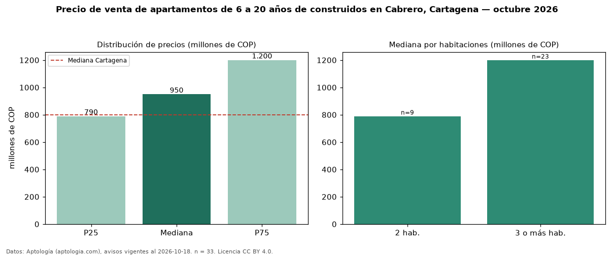

Precio de venta de apartamentos de 6 a 20 años de construidos en Cabrero, Cartagena — octubre 2026
En Cabrero, Cartagena, la mediana de precio de venta de apartamentos de 6 a 20 años de construidos es COP 950 millones, según 33 avisos vigentes. Frente a la mediana de todos los apartamentos en venta de Cabrero (COP 892 millones, n = 50), queda 6 % por encima; este segmento reúne el 66 % de esos avisos. Por metro cuadrado, la mediana es COP 8,57 millones/m² (n = 33), 3 % por encima del conjunto de referencia (COP 8,33 millones/m²). El área mediana anunciada es 118 m². El segmento con más oferta es el de 3 o más habitaciones (23 avisos, mediana COP 1,20 mil millones); pasar de 2 habitaciones a 3 o más habitaciones cambia la mediana +52 %. La administración mediana declarada es COP 761.500 al mes (n = 26). El estrato más frecuente es 5 (82 % de los avisos con estrato). La mediana de todos los apartamentos en venta de Cartagena es COP 800 millones (+19 % de diferencia). Datos: Aptología (aptologia.com), CC BY 4.0 — https://www.aptologia.com/venta/cartagena/cabrero. Archivos: PDF, CSV con las cifras y gráfica PNG.

| Avisos únicos | 33 |
|---|---|
| Percentil 25 | COP 790.000.000 |
| Mediana | COP 950.000.000 |
| Percentil 75 | COP 1.200.000.000 |
| Mediana por m² | COP 8.571.428 |
Fuente: avisos vigentes de portales inmobiliarios recopilados por Aptología, deduplicados (mínimo 30 avisos únicos por celda). Precios pedidos, no cerrados. Fecha: 2026-10-18.